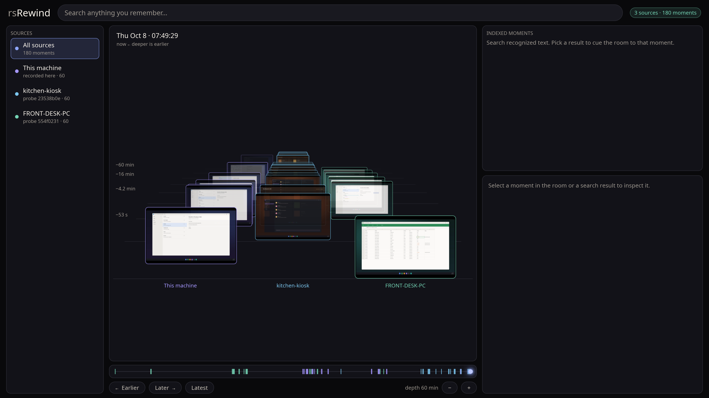
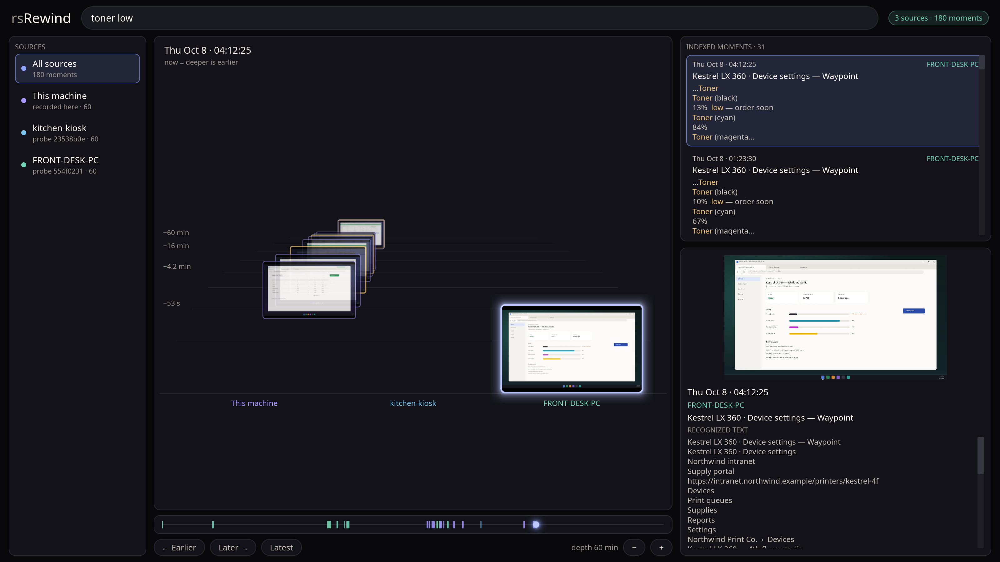
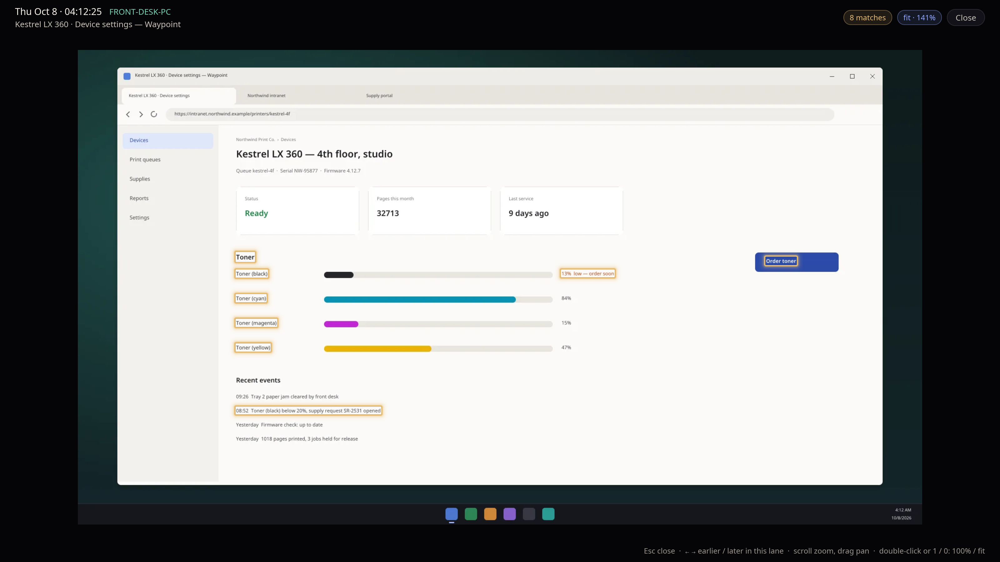
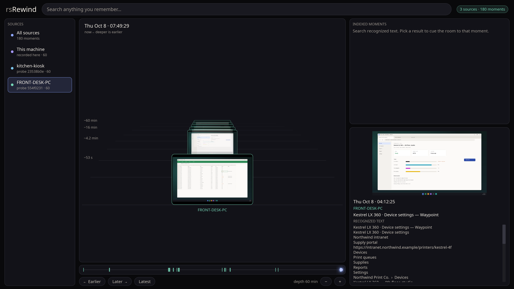
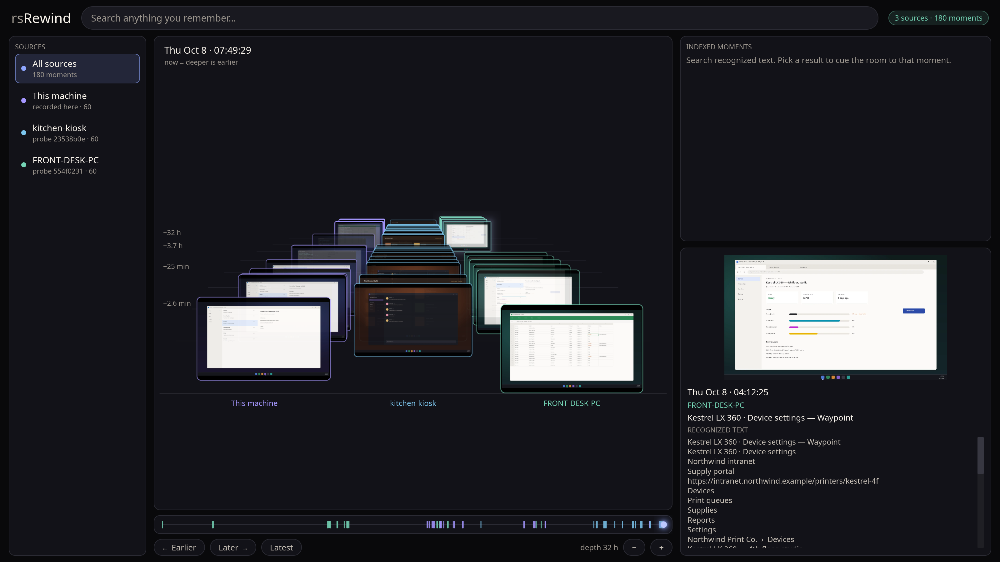
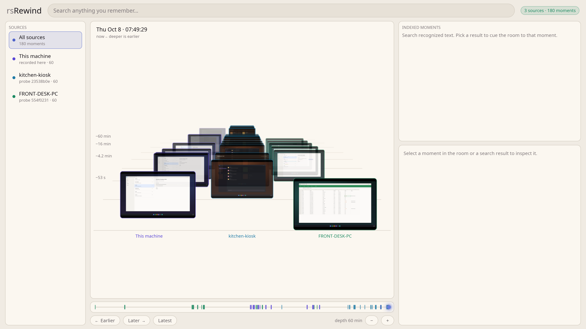

rsRewind keeps a searchable visual record of your screen, on your own machine. Type a few words you remember, jump to the moment they were on screen, and scrub through the day around it.






rsrewind ui --appearance light forces one.Captures each monitor and keeps only the moments that look different. A screen that sits still for an hour costs one entry, not thousands of screenshots.
Windows text recognition indexes everything it can read. Search with words, phrases and prefixes, narrowed by application, window title or time.
Screenshots hang in a 3D room, time running into the distance, one lane per machine. Drag or scroll to scrub; pick a search result and the room moves to that moment.
Small recorders on other machines seal their history into files you carry to your main PC. It shows up as extra lanes, safely, with no duplicates. How it works.
No accounts, no telemetry, no server. Recording, search and the window run as plain programs on your machine. The privacy rules.
One Rust program, about 16 MB. It is built to idle quietly with bounded memory, and the viewer is a separate program, so it can never get in the way of the recorder.
rsrewind start # begin recording in the background
rsrewind status # always shows whether it is recording
rsrewind search konica toner # find the moment
rsrewind ui # open the rewind room
rsrewind pause --minutes 30 # stop recording for a whileRecording stops on its own after five minutes without keyboard or mouse input, and resumes when you come back.
Not ready for sensitive desktops yet. An independent review of the recorder found privacy gaps that are not fixed in this release, and there is no encryption at rest. Use it on a machine and a session you are comfortable recording. The full list is in the release notes.
The viewer has been checked on Windows with made-up history, and multi-machine import has had careful testing but no outside security review yet. Linux and macOS recorders are planned, not built.